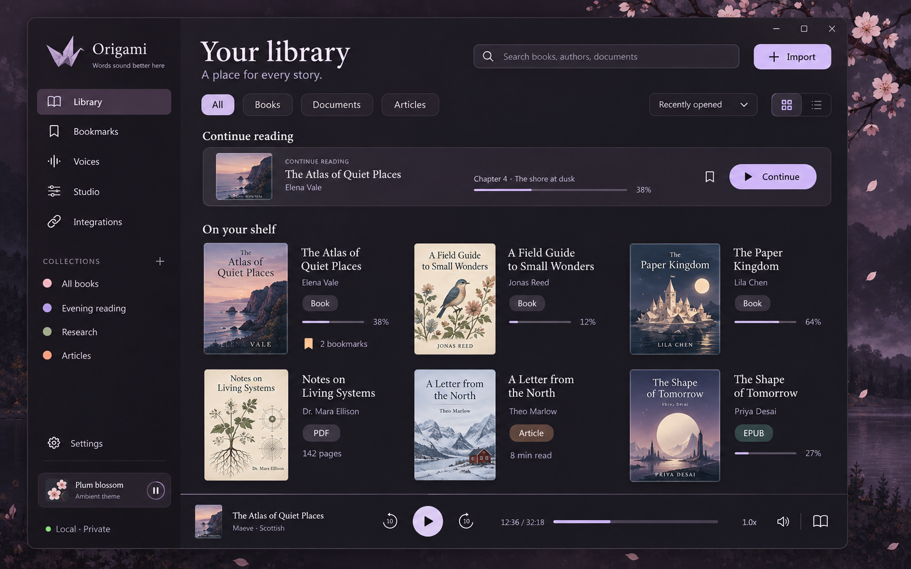
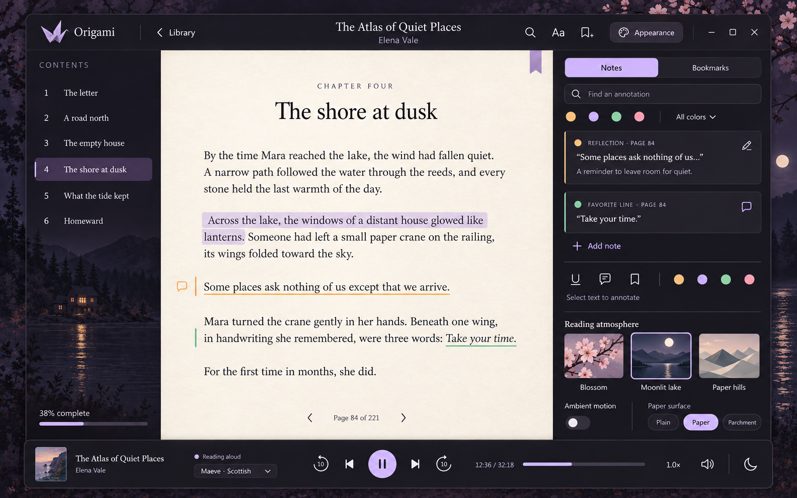

01. A substantial first release
Build a full reader with single-narrator audiobook export, rather than stopping at an interface around a text box. Deliver it in usable stages so the app can be exercised with real books while the rest of the first-release feature set is completed.
Required for v1
Library, structured imports, reader, bookmarks and notes, contextual selection tools, voice and model catalog, pronunciation, streaming playback, selective regeneration, durable jobs, bounded storage, exports, twelve themes, clipboard reading, migration and the existing chat integration where supported.
Additional first-release targets
Chrome/Edge/Brave extension, mini-player, media keys and sleep timer. These are planned work, with explicit platform checks. A browser-specific problem should not prevent a usable reader build from being delivered.
After v1: multi-character Studio and automatic speaker attribution, guided voice cloning, system sound capture, transcription, scanned-document OCR, word alignment, cloud sync, live voice conversion and model training. Keep room for them in the data model without exposing empty pages or unfinished controls.
“Local” means downloaded compatible models can generate new speech without a service account or internet connection. Model installation may need a download or model-specific access. Cloud engines are a future optional adapter, not a requirement for using the library.
02. A workspace that gives space back




- Left panel: library collections and filters in Library; contents, chapter navigation and in-book search in Reader. Collapse and reopen with a visible button or keyboard shortcut.
- Center: the shelf, document or reading page. Collapsing either sidebar immediately gives that space to the center. The reading column still has a comfortable maximum line width.
- Right panel: a resizable inspector whose tabs and contents follow the current workspace and selected object. Collapse independently from the left panel. A small toolbar remains available for reopening it.
- Bottom player: playback, seek, skip, voice summary, speed, volume and output device. Reader panels may close while playback continues. Extra transport options live in a menu, not an ever-widening row of buttons.
- Focus mode: hide both panels and reduce the header. Keep a compact player available; allow playback controls to auto-hide when reading visually.
- Remember the layout: save panel widths, collapse state and last inspector tab per workspace. On narrow windows, use one temporary side drawer at a time rather than squeezing the reading page.
The first-release navigation is Library, Bookmarks, Voices and Integrations, with Settings and a compact activity indicator. Quick Read opens from a button or shortcut. Studio becomes a real navigation destination when its first workflow is ready.
03. A right inspector that responds to your work
Keep stable tabs for Notes & Bookmarks, Voice, Appearance and Document. Add a temporary Selection tab when text is selected. Use labels plus icons, with an overflow menu when space is limited. Notes and bookmarks have a small internal switch, not two permanently expanded lists.
| Context or tab | What appears | Behavior |
|---|---|---|
| Text selected | Read selection; read from here; copy; bookmark; colored underline; add note; spoken-text preview; edit spoken wording; pronunciation rule; regenerate audio. | A compact nearby toolbar offers the common actions. The inspector holds detailed controls and generation scope. Read selection temporarily plays that excerpt; Read from here changes the book playback position. |
| Existing annotation clicked | The quoted passage, note editor, color, icon, label, group/tags, jump-to-passage, delete and undo. | Open Notes & Bookmarks focused on that item. Editing a note never regenerates speech. |
| Voice | Searchable voices, favorite filter, accents/languages, audition, model choice, device readiness, compatible settings and document default. | Audition selected text when there is a selection, otherwise a fixed short sample. Applying a voice changes future generation settings for the document; it does not silently rebuild the book. |
| Appearance | App theme, reading surface, font/size/spacing, page width, scroll/paged mode, ambient scene, motion, intensity and reduced motion. | Reading appearance and app chrome are separate. Scene choices are optional and independent of the color theme. |
| Document | Title, author, cover, type, tags/collections, source, import quality, reading statistics, language, spoken-text rules and export actions. | Show extraction warnings and repair options here. Selecting a shelf item opens this inspector without starting playback. |
| Multiple library items | Shared tags/collection, mark finished/unread, export queue, remove or trash. | Show selection count and the precise action scope. “Select all” explicitly means the current filtered results. |
| Nothing selected | The last chosen stable tab and document-level controls. | Remove temporary selection tools. Preserve drafts, cursor position and the user's pinned tab. |
Context changes must not feel jumpy. Auto-open Selection only if the user has enabled contextual opening and is not editing a note or using a pinned tab. If the inspector is collapsed, show the small selection toolbar and a “More” button instead of forcing it open. Dragging the text selection must not trigger repeated tab changes. Keyboard users receive the same actions through a menu and shortcuts.
Selection is not always an audio boundary. “Regenerate these words” may require rebuilding the containing sentence or a slightly wider engine-specific unit for clean prosody. Highlight the exact replacement range before starting. Preview the new take, compare with the old one, then keep or revert it. Preserve the previous take if generation fails.
Editing has an explicit meaning. “Edit spoken wording” changes the narration layer, preserving the source. Correcting visible extracted text is a separate, reversible action. Neither action silently rewrites the imported EPUB, PDF or DOCX. Playback and exports use the same accepted spoken version.
04. Twelve themes, with independent reading surfaces
Use shared semantic color tokens so every dialog, menu, icon, selection and error state follows the chosen palette. The approved purple design becomes Plum Nocturne, one of twelve launch themes. The samples below indicate palette direction, not final contrast-tested token values.
Plum Nocturne · dark
Graphite · dark neutral
Moonlit Lake · dark blue
Forest Ink · dark green
Copper Hearth · warm dark
Burgundy Velvet · dark red
Paper White · light neutral
Warm Parchment · sepia
Sage Morning · light green
Rosewater · light pink
High Contrast Dark
High Contrast Light
- Reader surface: clean light, clean dark, fine paper or parchment; texture strength can reach zero. Font family, size, line height, letter spacing, margins and column width are adjustable.
- Keep annotation colors semantically stable across themes. Combine color with names/icons so “important” does not require distinguishing red from green.
- Include an optional reading ruler and paragraph focus. Show spoken-sentence highlighting separately from saved user marks.
- Ambient scenes: plum blossoms, moonlit lake and folded-paper landscape. Still artwork plus a few animated layers, not a continuously decoded background video.
- Motion settings: Off, Subtle and Reduced. Honor operating-system reduced motion, pause when hidden or minimized, and offer an energy-saving setting. Keep motion outside the text column.
- Save presets that combine palette, reader surface, typography and scene. Offer system light/dark switching without overwriting the user's saved presets.
Performance is a release check, not an assumed property of the artwork. Benchmark still and animated scenes while speech is generating on representative hardware; turn off expensive effects before they compromise audio.
05. First-release feature inventory
Library and imports
Drag/drop and file picker; batch import; paste/Quick Read; EPUB, text-based PDF, DOCX, Markdown and TXT. Preserve the original file in the managed library by default. Detect duplicate content and offer open existing, keep another copy or replace with a new source version. Import failures should identify which file failed while allowing other imports to finish.
Grid/list views, adjustable cover sizes, search by title/author/tag, reading status, file type, collection and favorites. Sort by recent activity, date added, title and author, ascending or descending. Support editable metadata, custom covers, collections, tags, finished/unread state, select all filtered results, bulk operations and a continue-reading shelf.
Separate remove from library, clear generated audio and delete a user export. Library removal must preserve external originals and manually exported audio. A recoverable trash retains item metadata, notes and the app-managed source for a defined period; disposable cache may be removed sooner. Permanent deletion previews exactly what it removes.
Reading and annotations
Table of contents, chapter navigation, in-book search, go to position, visual reading progress and persistent resume. Offer paged and continuous scrolling modes, font scaling, keyboard navigation and a “follow narration” toggle. Manual scrolling should not constantly snap back to the speaking sentence; provide an explicit return-to-playback action.
For text PDFs, provide the original page view and a separately labeled extracted reading view. A PDF page number must not be confused with a reflowed reading location. Flag missing text, uncertain extraction and columns that need reading-order review. Image-only PDFs should explain that OCR is not yet available rather than showing a blank successful import.
Bookmarks can have names, colors, icons, tags and groups. Notes can attach to a selection, paragraph, chapter or whole document. Underlines and optional translucent highlights preserve the text. A global Bookmarks view searches across the library and filters by book, collection, color, label or annotation type. Support editing, deletion with undo, jumping to the passage and exporting notes with quotes and source locations as plain text, Markdown or JSON.
Voice and model management
Import the existing Maeve voices and the other voice profiles as versioned voice packs. Show voice portraits or initials, useful names, accent/language/style tags, favorites and consistent preview samples. A voice and its engine are separate choices. Keep unsupported combinations unavailable with an explanation.
Prioritize the Qwen profiles that worked well in the current app, then certify the existing Chatterbox, Pocket TTS and VoxCPM adapters per operating system and device. Preserve each engine's appropriate streaming strategy. Do not force a troublesome streaming mode on every engine, and do not remove supported incremental playback from fast engines.
Include a model manager with installed/downloadable status, download size, disk space, resumable downloads, checksum validation, clear errors, uninstall and hardware readiness. Separate CPU-compatible and GPU-required options. A missing model should lead to setup without losing the selected book or reading position. Only show pitch, emotion, seed, language and style controls where the chosen adapter actually supports them.
Allow a global default and per-document voice preset, a sample audition using selected text, and explicit actions to apply changes to future passages or regenerate an identified scope. Avoid automatic regeneration while browsing the voice catalog. Guided creation of a new cloned voice remains a later workflow.
Speech preparation and pronunciation
A “spoken version” preview explains what will be read. Reversible rules handle repeated headers, page numbers, URLs, citations, footnotes, code blocks, markup and chat-specific metadata. Preserve original content and provide per-document overrides. Code and tables must have visible read/skip behavior; avoid silently inventing a natural-language interpretation.
Offer global and per-document pronunciation dictionaries for names, abbreviations, numbers and terms. Support preview in context and engine-appropriate pronunciation hints. Rules must have a clear matching scope and avoid unexpectedly changing substrings inside other words. Local spoken-text corrections should not change the text shown in the source view.
Playback and selective repair
Play/pause/stop, seek, previous/next sentence, previous/next chapter, skip ten seconds, speed, volume, output device and resume. Show buffered/generated regions separately from unrendered regions. Seeking into ungenerated text should prioritize that passage and explain the short wait rather than pretending the audio exists.
Start after a small suitable audio buffer while later units generate. Use stable phrase/sentence boundaries or actual engine streaming as supported. Sentence highlighting follows measured audio timing. Word highlighting waits for a reliable alignment feature; receiving tiny audio chunks alone does not provide word timestamps.
Selection playback, read from here, paragraph replay, selected-section regeneration, keep/revert a take and pronunciation repair all belong in v1. A short temporary selection audition should preserve the previous listening position. Regeneration replaces only the accepted range and does not restart the whole book.
Additional first-release comfort targets: sleep timer for minutes or chapter end, compact floating mini-player, available OS media keys and configurable shortcuts. A small activity indicator may expose job progress and cancel actions; there is no need for a permanently visible queue panel.
Long jobs, audio ownership and export
Generate a selection, chapter or whole book. Save job progress to disk, pause background work at safe boundaries, cancel it promptly, retry failed units and resume after restart. Prioritize listening over background exports. Explain that slow hardware can require pre-generation before uninterrupted listening.
Export WAV, MP3, chapter-per-file audio and chaptered M4B, with chosen destination, useful filenames, title/author/narrator/cover metadata and quality presets. Validate packaged encoders and chapter metadata in external players. Show duration and storage estimates as estimates, and permit an explicitly requested partial export only with its missing sections listed.
Exports must use accepted takes and the same spoken text as playback. Add portable project backup/import containing metadata, annotations, pronunciation rules and permitted source/voice references; include generated audio as an option and exclude large model weights by default.
Use a configurable disk cache with age/size limits, a storage dashboard and a “keep available offline” pin for prepared audio. Cache cleanup never removes active playback, protected generation jobs, pinned audio, originals, notes or user-saved exports. If protected data fills the budget, explain why cleanup cannot reach the limit and pause new background generation when needed.
Integrations and everyday use
Explicit clipboard read, Quick Read and optional shortcuts. Each integration has its own enable/disable control and permissions summary. Preserve the current chat workflow: opt in per conversation, hook/unhook independently, refresh available chats without restarting, stable names and IDs, deduplicated message history, per-message play/save/delete and queued completed replies.
Suggestion cards and automation/control payloads must not become conversations or speech. Test filtering on actual supported event formats and keep ambiguous items inspectable. A deleted local chat can be found and connected again. Existing chat hooks are an optional adapter with a declared compatibility boundary, not a universal guarantee about every chat host.
The browser extension is a first-release target for Chrome, Edge and Brave: Read selection, Read from here where extraction allows it, Read article and Add to library. Browser/OS combinations are tested separately. Default to explicit user actions, including selected text from an email, rather than background mailbox access. Unsupported pages retain copy-and-read as a fallback. Firefox is the next extension target.
Accessibility, setup and recovery
Keyboard-only completion of the core workflow; labeled controls; visible focus; scalable text; high contrast; no color-only meaning; reduced motion; screen-reader testing on both platforms. Shortcuts are documented, remappable where feasible and must not steal normal text-editing keys.
Setup checks hardware, available disk and model requirements. Include local diagnostics with redaction, a user-chosen support bundle, backup/restore, settings export and readable model errors. No required account or default content telemetry. Future cloud credentials belong in the OS credential store or a platform-appropriate secure store, never the project files or diagnostic log.
06. Design the core around whole books
The book is never one enormous generation request. Render and generate bounded sections, persist completed audio immediately and load only a limited playback window into memory. Continuous reading across chapters should not grow a permanent in-memory audio archive.
Cache identity includes source/spoken-text version, pronunciation rules, voice-reference version, model/settings, language and any generation context that influences the result. A setting change can mark affected passages as needing new audio without deleting the old accepted take. Safe writes prevent incomplete files from looking like successful renders.
Annotation anchors combine stable passage IDs, text offsets, quoted text and source locations. A source replacement creates a new version and attempts an explicit migration. If a note cannot be attached confidently, keep it in an “Unresolved location” list for repair, never discard it or silently point to different text.
Export jobs snapshot their accepted content and settings so unrelated edits during a long render do not produce a mixed edition. Engine crashes, device changes, disk-full conditions and cancellation must preserve completed work and leave the document readable.
Measure time to first audio separately from sustained generation speed. Track cold and warm startup, real-time factor, peak RAM/VRAM, cancellation latency and audible joins. Publish actual measurements by engine/device; do not promise that every voice keeps up with every playback speed.
07. Later Studio: a cast for every story
The future Studio supports one book with a narrator and multiple character voices. Speech remains in story order. This does not require all voice models to occupy the GPU simultaneously; the scheduler can reuse a loaded engine and switch voice conditioning between passages. Simultaneous overlapping voices are a separate mixing feature.
- Start with a narrator. A project works with one voice before analysis is enabled.
- Optional “Detect speakers” toggle. Analyze textual dialogue and attribution cues, creating proposed speaker assignments. For a book this is text-based speaker attribution; identifying speakers from a recording would be a different feature.
- Create a color-coded cast. Use Narrator, Voice 1, Voice 2, Voice 3 and so on when identity is uncertain. Show the speaker name and icon as well as color.
- Suggest character names. Explicit cues such as “Mara said” may support a proposed rename. The user can accept, edit or reject it. Optional automatic naming applies only above a defined confidence threshold and never overwrites a manual name.
- Review uncertainty. Mark unattributed dialogue, internal monologue, quoted letters and ambiguous exchanges for review. Never present model guesses as established character identity.
- Edit who says what. Assign selected dialogue or whole passages, split/merge utterances, merge aliases, split an incorrectly combined character and apply a correction locally or across the project.
- Choose a voice for each character. Audition, set pronunciation/style where supported and preview the narrator-to-character transitions.
- Generate and repair. Render the cast in sequence, keep approved takes, rerender only changed passages and export a chaptered audiobook.
Turning detection off stops analysis and reassignment. Preserve accepted assignments and manual edits. A separate “Use one narrator” playback/render option handles people who want to temporarily hear everything in one voice. Rerunning detection produces reviewable suggestions and never replaces locked manual assignments.
Prepare now: reserve stable speaker IDs, optional speaker references on speech units, assignment provenance/confidence, revision history and voice preset references. Do not build the detection model, cast editor, dialogue timeline or overlap mixing in the reader's first release.
08. Implementation direction and platform gates
Provisional stack: TypeScript/React for the interface, Tauri/Rust for the desktop core, isolated Python workers for the speech engines and SQLite plus regular files for durable data. This carries forward tested engine knowledge while allowing the new interface and library to be built cleanly.
Tauri supports external worker binaries, including packaged Python programs. Each platform needs an appropriate binary bundle. This supports the proposed process separation but does not make model dependencies automatically portable. Tauri sidecar documentation.
The shell choice remains gated on a working Windows/Linux proof: text selection, keyboard and screen-reader access, long-document rendering, audio playback/seek and one model worker. The platform prerequisites differ, so test native environments early. If this exposes a material problem, compare Qt Quick before committing the full reader. Tauri prerequisites.
Use stable application passage IDs with the renderer's selection ranges. A browser selection represents ranges in the current document, so it is not itself a durable book annotation key. Persist document-relative anchors instead. Selection API.
For browser transport, a registered native messaging host is the initial design. Chrome documents extension-to-native-app messaging and host registration; other browsers still need separate packaging and compatibility checks. Validate a small set of message schemas and user-authorized actions, rather than exposing a general command runner. Chrome native messaging.
Declare the initial support matrix before release: Windows 11 x64 and a specific Ubuntu LTS x64 target, with at least GNOME/Wayland testing; add KDE and additional distributions through tested packages. Test CPU fallback and NVIDIA profiles where their engines support them. Wider AMD, ARM and sandboxed-browser support remain separately qualified targets. These are planned support targets, not certification already performed.
Keep OS-specific audio devices, shortcuts, tray integration, credential storage, browser registration and chat hooks behind adapters. Keep imported active content inert. Version voice packs, project backups and worker messages so an upgrade can report incompatibility instead of corrupting data.
09. Build order and review points
| Stage | Working result | Review before expansion |
|---|---|---|
| 0 · Prove the platform | A small Windows/Linux reader shell with one speech worker, persistent state and seek. | Validate the framework, accessibility, packaging and audio lifecycle. Record supported environments and initial performance. |
| 1 · Establish the product shell | The approved library/reader layout, real theme tokens, collapsible panels, contextual tabs and collection navigation. | Review real window sizes, panel widths and keyboard operation with the user. Finalize the layout before filling every screen. |
| 2 · Make books first-class | Imports, normalized chapters, original/reflowed PDF views, search, stable reading position and annotations. | Open actual novels, research documents and articles. Verify extraction quality and annotation persistence. |
| 3 · Deliver the first usable reader | Voice/model selection, spoken version, pronunciation, incremental speech, highlight, seek and selected-passage repair. | Listen to long chapters and compare repair takes. Validate audio boundaries and selection behavior. |
| 4 · Complete audiobook reliability | Persistent jobs, disk cache, protected audio, project backup and WAV/MP3/M4B export. | Interrupt/restart long renders, fill the cache, change a passage and export to external players. |
| 5 · Finish the first release | Migration, chat adapter, clipboard, browser extension target, accessibility, comfort controls, installers and diagnostics. | Fresh installs and real workflows on Windows/Linux. Document any engine or integration excluded from that build. |
| After v1 · Expand deliberately | Multi-character Studio, voice creation, capture/transcription, OCR, alignment and other advanced workflows. | Each gets its own acceptance criteria and reference projects. |
This is a dependency order, not a time estimate. The first usable reader appears at Stage 3; the complete first-release scope includes Stages 4 and 5. Do not silently redefine the first release as only the visual shell.
Maintain the existing Maeve app while the new reader matures. Import its voices, presets and selected history through a backed-up, repeatable migration. Avoid duplicate speech by ensuring only the user-selected installation owns an enabled chat hook. Existing manually exported audio stays where it is.
Download the implementation backlog. It records work-package IDs, dependencies, scope and acceptance criteria.
Show all implementation work packages
| ID | Stage | Package | Dependencies | Acceptance |
|---|---|---|---|---|
| M0 | 0 | Windows and Linux proof Required for v1 | None | Run the same reader shell, keyboard navigation, local worker audio and seek on Windows and a named Linux distribution; document failures before choosing the final shell. |
| M1 | 1 | Collapsible workspace and inspector Required for v1 | M0 | Panels resize and collapse independently, restore per workspace, remain reachable by keyboard, and preserve unfinished notes across selection changes. |
| M2 | 1 | Twelve themes and reading surfaces Required for v1 | M1 | All themes style every component, support visible focus, keep annotation meaning stable, and work with independent light/dark/paper reader surfaces. |
| M3 | 1 | Collections, search and bulk organization Required for v1 | M1 | Import, rename, tag, favorite, filter, sort, select all filtered results, trash/restore and resume items without duplicate imports. |
| M4 | 2 | Structured document import Required for v1 | M3 | EPUB, text PDF, DOCX, Markdown, TXT and pasted text retain chapters/source locations; failed extraction is reported, never silently truncated. |
| M5 | 2 | Paged/scroll reading and navigation Required for v1 | M4 | Search, table of contents, progress and reading position work across font, window and theme changes; PDF source page and reflowed views are distinct. |
| M6 | 2 | Bookmarks, margin notes and underlines Required for v1 | M5 | Named colored annotations support groups, tags, edit/delete/undo, search and export; stable anchors survive reflow and unresolved changed-source anchors are surfaced. |
| M7 | 3 | Voice catalog and model adapters Required for v1 | M0;M1 | Existing voices import, previews work, compatible engines are identified, preferences persist and unavailable engines never silently substitute voices. |
| M8 | 3 | Spoken-text preview and pronunciation Required for v1 | M4;M7 | Cleaning and pronunciation rules are reversible and scoped; source-to-spoken mappings drive the same playback and export text. |
| M9 | 3 | Incremental generation and transport Required for v1 | M5;M7;M8 | Playback begins before a chapter finishes rendering, seeking prioritizes unrendered sections, highlighting follows real segment timing and cancellation stops obsolete output. |
| M10 | 3 | Selection editing and audio regeneration Required for v1 | M6;M9 | Users see exact synthesis scope, preview a new take, keep or revert it, and retain previous accepted audio after failure. |
| M11 | 4 | Persistent jobs and bounded storage Required for v1 | M9;M10 | A long job resumes after worker/app failure, writes partial results safely, respects RAM/disk limits and never evicts active or pinned audio. |
| M12 | 4 | Audiobook and project exports Required for v1 | M11 | WAV, MP3 and chaptered M4B exports preserve order and metadata, survive restart, and remain untouched by library deletion or cache eviction. |
| M13 | 5 | Existing chat adapter and explicit clipboard Required for v1 | M3;M9;M11 | Per-chat opt-in, refresh, stable identity, hook/unhook, suggestion filtering and queued replies work; unsupported hosts explain their capability. |
| M14 | 5 | Browser selection and article extension First-release target | M13 | Read selection/add article work in Chrome, Edge and Brave on tested OS/browser pairs with explicit user action and removable native host. |
| M15 | 5 | Migration, installers and accessibility Required for v1 | M2;M6;M7;M10;M11;M12;M13 | Fresh install, backup/import, removal, offline reading, keyboard and screen-reader flows pass on declared Windows/Linux targets. |
| M16 | 5 | Sleep timer, mini-player and media keys First-release target | M9;M15 | Controls stay synchronized, timer stops at the selected boundary, and unavailable platform media/shortcut support has a clear fallback. |
| X1 | After v1 | Scanned-PDF OCR and advanced layout repair Later | M4;M5 | OCR is a versioned extraction with explicit review of uncertain reading order and original-page anchors. |
| X2 | After v1 | Word timing and subtitle export Later | M9 | Alignment is measured against audio; word highlights and SRT/VTT never use guessed timestamps. |
| X3 | After v1 | Multi-character narration and editable attribution Later | M10;M11;M12 | Speaker detection is optional; Voice 1/2/3 assignments have colors, confidence and suggested names; manual overrides survive reruns and only affected passages regenerate. |
| X4 | After v1 | Guided voice cloning and voice design Later | M7;M10 | Reference preparation and boundary checks, A/B listening and versioned voice profiles precede committing a new voice. |
| X5 | After v1 | Microphone, desktop sound and transcription Later | M11;M15 | User chooses an available capture source with a visible recording state and stop action; support is declared per operating system. |
10. What must be true before calling it ready
- Book-length reliability: a novel-scale document and a roughly one-million-character stress fixture import without truncation; UI and playback memory remain bounded with increasing generated duration.
- Audio continuity: preview and export agree, accepted passages keep their voice settings, joins are listened to, and generation never advances the player with cancelled or obsolete output.
- Recovery: after process termination during generation, completed units remain valid, partial units retry safely and the reading position and annotations return.
- Selection repair: rewriting one passage marks only the necessary dependent units stale, shows the replacement scope and keeps the previous audio until the new take is accepted.
- Data ownership: deleting a message/book removes its eligible managed cache but never manually saved exports or external original files. Shared and protected cache references are respected.
- Annotation durability: theme/font/window changes preserve marks. Source replacement either migrates an anchor or surfaces it for repair without losing the note.
- Context behavior: selection tools appear predictably, both side panels reopen, tabs preserve state, and no selection steals an unfinished note or pinned inspector.
- Themes and access: every theme covers all controls; focus and contrast are checked; core flows work with keyboard and screen readers. Reduced motion produces a still, usable reader.
- Integration identity: one reply produces one message in the correct chat; suggestions and internal control messages produce none; a new/reconnected conversation appears without restarting.
- Installation: a friend can install, acquire a compatible model, import a book, hear it and save audio without a terminal. Offline generation works after setup on each declared platform.
- Performance evidence: record cold/warm first-audio latency, sustained rate, memory, cancellation and background-scene overhead on named test hardware. Set numerical budgets after Stage 0 baselines and enforce them thereafter.